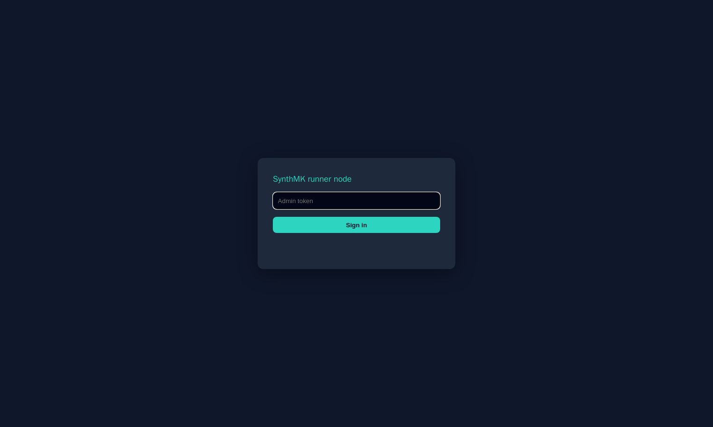

Security & operations
SynthMK is designed around that fact. This page is the full model — what the product enforces, what was actually tested, and what remains your responsibility as the operator. The per-release test evidence behind every claim is public in docs/STATUS.md.
Flow files contain {{ secret.name }} references. The values live in one YAML file on the runner node and nowhere else — not in flows, not in git, not in the Checkmk configuration, not in the recorder.
{{ totp.name }} generates RFC 6238 codes from a base32 seed stored in the same protected file — monitor MFA-enforced accounts without disabling MFA for them.sensitive flag; the typed value never enters the extension's state.# secrets.yaml — chmod 600, mounted read-only into the node. # This file is the ONLY place values exist. portal_user: monitor-bot portal_password: "…" vpn_totp: "JBSWY3DPEHPK3PXP" # base32 seed for {{ totp.vpn_totp }} # What Checkmk sees when a login step fails: CRIT - step 4 (fill #password): timeout — value '***' redacted # What the flow file contains (safe to commit): - action: fill selector: "#password" value: "{{ secret.portal_password }}" sensitive: true
The node exposes exactly three services, and the defaults assume a hostile LAN rather than a trusted one:
cmk -d over TLS against Checkmk Raw 2.3. The plaintext fallback exists for labs and is labelled as such.
The shipped production compose file is the hardened configuration, not an example to harden later:
no-new-privileges, memory and CPU limits, healthcheck — set in the shipped compose.yaml.One honest caveat: Chromium runs with --no-sandbox inside the container, as is standard for containerized browsers, with privileges dropped instead. Point flows only at sites you trust and keep the image updated — this is listed in the residual-risk table below, not hidden.
Capacity
Numbers from scripts/scale_test.sh in the repo — a 5-minute soak of 60 flows on a single container limited to 4 CPUs / 6 GB, every fifth flow a full multi-step login journey with secrets. Method and capacity formula: docs/scaling.md.
Honesty section
No vendor table ever lists these. SynthMK's are public, in the repo, with severity ratings. The short version:
| Severity | Residual item | Your move |
|---|---|---|
| Medium | Chromium runs --no-sandbox in the container (standard for Docker; privileges dropped to an unprivileged user instead). | Point flows only at trusted internal sites; rebuild the image on a schedule to pick up browser updates. |
| Medium | Clickable screenshot links need Checkmk's “Escape HTML codes in service output” set to Off — a known XSS surface if applied broadly (Checkmk Werk #6058). | Scope that rule to the runner host(s) only. SynthMK emits a single sanitized line, but keep the rule narrow anyway. |
| Low | The lab/default agent transport (socat, port 6556) is plaintext. | Use it only firewalled-to-the-Checkmk-server or in labs; switch production to the official TLS agent mode. |
| Low | The bundled lab ships hardcoded demo credentials for its demo site. | Never reuse lab credentials outside the lab. They exist so the end-to-end test is reproducible. |
| Low | Supply chain: the base image is pinned by version, not digest. | Review MKP contents before distributing internally; pin by digest in your own build if policy requires it. |
| — | Script checks, if you enable them, run with the node's privileges by definition. | Treat the scripts directory like production code: review before deploy, restrict who can write to it. |
Full security review with status per item: docs/STATUS.md §5. What is tested per release — and explicitly what is not yet tested — lives in the same file.